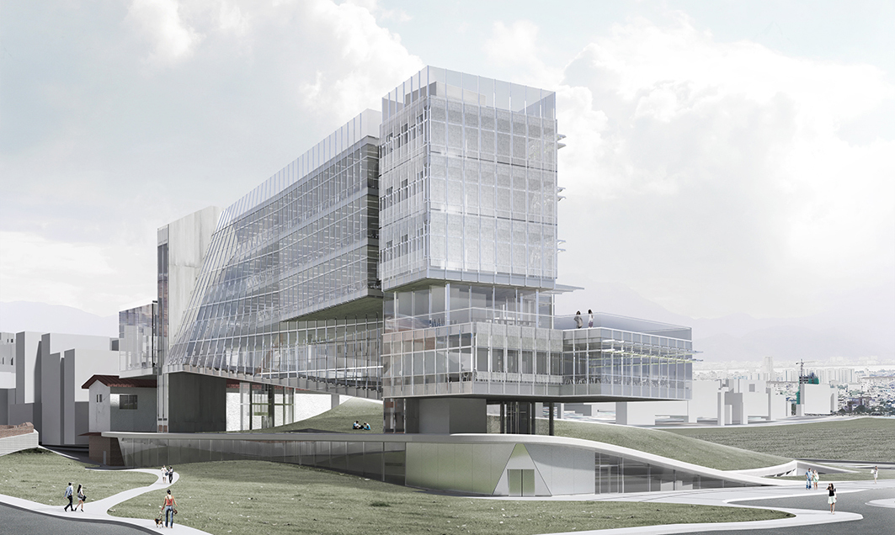

Urban Podium
Individual Design Competition
Seoul Education Hub Headquarters
2017
Seoul is one of the leading cities in technological advancement,
and yet is capital to a culture stymied by Confucianism and
traditional values. Traditionalism resides deep within Korean
society, with respectful bows and honorifics commonly used. These
social cues give power, oftentimes undeserved, to the elders and,
as showcased by the unfortunate events during the landing of a
commercial flight, can have disastrous consequences. This power play
shows most evidently in the careless development of certain historic
neighborhoods of Seoul where neither adequate services nor funding
were provided to complete the masterplans headed by corrupt
politicians.
The competition site remained an area left behind by the miracle of
South Korea’s growth and has recently undergone a new wave of
rampant gentrification. Given to the Seoul Metropolitan Office of
Education for its new headquarters building, the site looks for a
mixed-use office and cultural building that can guide the
neighborhood through its urban renewal. A certain degree of irony
plays its part when the misdeeds of centralized power found a
solution in itself.
The name of the project, the Urban Podium, provides at face value a
prospect for an attractive center of cultural heritage and communal
bonding. When alternating the terminologies of the podium however,
the space becomes a stand on which the citizens are given voice and
power, reversing the political status quo. The Podium offers an
ironic twist by misrepresenting the architectural podium, bringing
light to issues of densification like miscommunication, isolation
and sustainability. This multi-faceted intention of architectural
design leads into an exploration of form as substance and form as
power, in all aspects of the term as it applies to human interactivity.